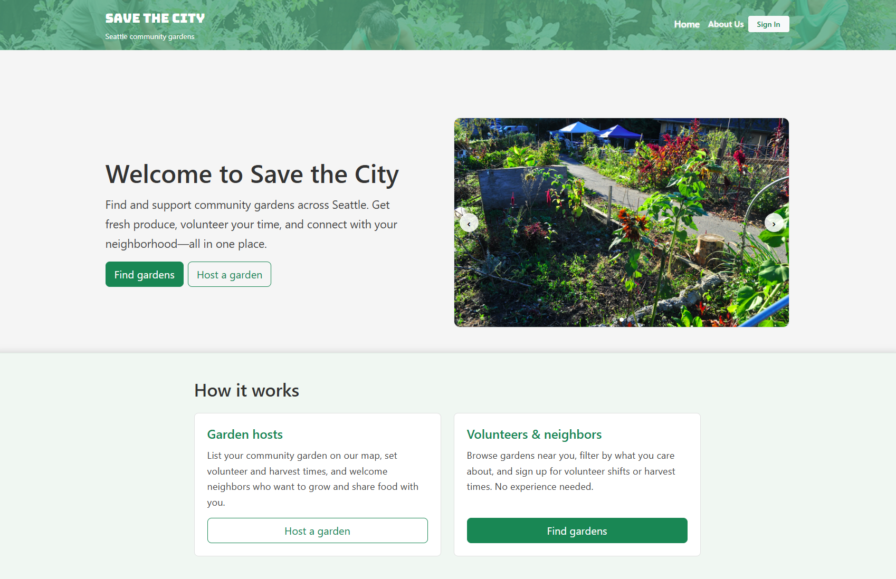

Real-Time Fisheries Compliance & Alert System
Workflow and alert design to reduce unintentional illegal fishing through real-time guidance.


University of Washington
I work on product design
Hi, I'm Maximiliano Bange, an Informatics student at the University of Washington specializing in data science and product and project management.
UW: mbange@uw.edu
I focus on understanding how people interact with systems and where those systems break down. This section of my work draws from product design, UX, and systems thinking, with an emphasis on real-world constraints, tradeoffs, and data-informed decisions.
Workflow and alert design to reduce unintentional illegal fishing through real-time guidance.
A web platform connecting Seattle residents to local community gardens, built as a team project with a focus on accessibility and clear information architecture.



Community resource hub prototype designed for low-barrier access to food, shelter, and legal support.